Noising, denoising, Euler sampling, classifier-free guidance, image editing, visual anagrams, and hybrid images with a pretrained flow model
This part uses a pretrained text-to-image flow model (PixNerd-XXL-P16-T2I, 512×512, with Qwen3 for the text prompts), so nothing is trained. Given a noisy image xt, a time t and a prompt c, the model predicts a velocity vθ(xt, t, c), which is the direction to move the image so it looks more like a real picture of the prompt. Everything in this part comes from that one function. One step gives a denoiser, many small steps generate images from noise, and changing how the velocity is combined gives guidance, editing, and the two illusions at the end.
In this project t = 0 is pure noise and t = 1 is a clean image. Unless stated otherwise, I used step size h = 0.02, CFG weight w = 7, the empty string as the unconditional prompt, and seed 180.
A noisy image at time t is a straight-line blend of a noise image ε and the clean image x1:
I used one noise tensor for all three times, so t is the only thing that changes, and kept all of them for Sections 1.2–1.5.
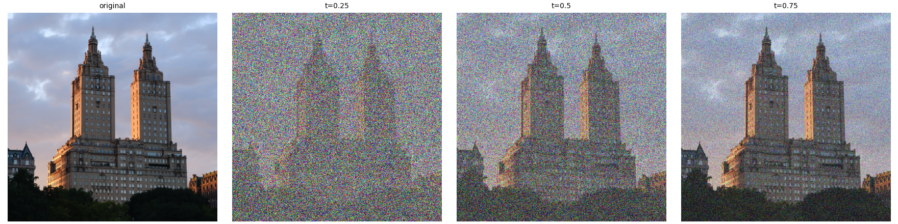
My image is a building in New York that I took while rowing a boat in Central Park. At t = 0.25 it is mostly noise with only the rough shapes visible, and by t = 0.75 most of the detail is back.
As a baseline with no learning, I tried a Gaussian blur. xt only contains t times the image, so I divide by t first to get the brightness back, then blur to average out the noise:
For each t I tried σ = 1, 2, 4, 8, 16 and kept the one with the lowest MSE to the clean image.
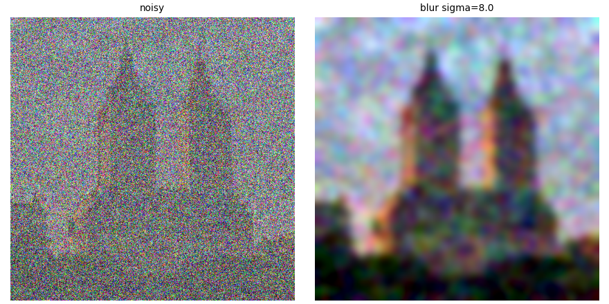
t = 0.25, best σ = 8
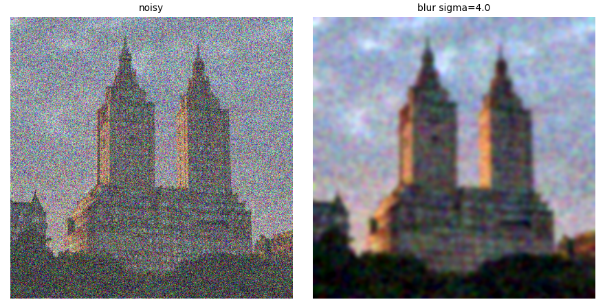
t = 0.50, best σ = 4
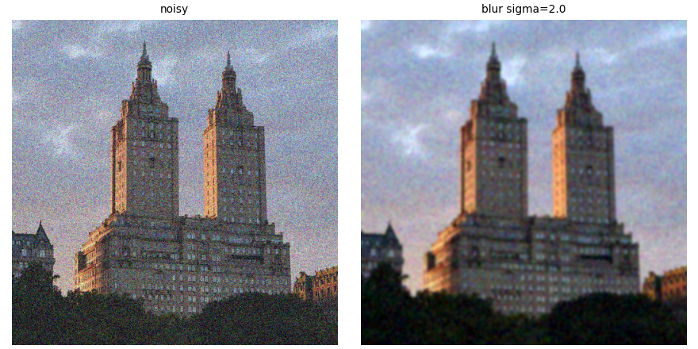
t = 0.75, best σ = 2
The noisier the input, the bigger the best σ. The blur gets rid of the noise but takes the edges and texture with it, since it can't tell noise from detail. What's left is soft color blobs in roughly the right layout.
The path from xt to x1 is a straight line with (1 − t) of time left, so one step of that length along the predicted velocity gives an estimate of the clean image:
def interpolate(image, noise, t):
return (1 - t) * noise + t * image # t = 0 -> noise, t = 1 -> image
@torch.inference_mode()
def one_step_denoise(x, t, condition, predict_velocity):
v = predict_velocity(x, t, condition) # one model call
return x + (1 - t) * v # jump straight to t = 1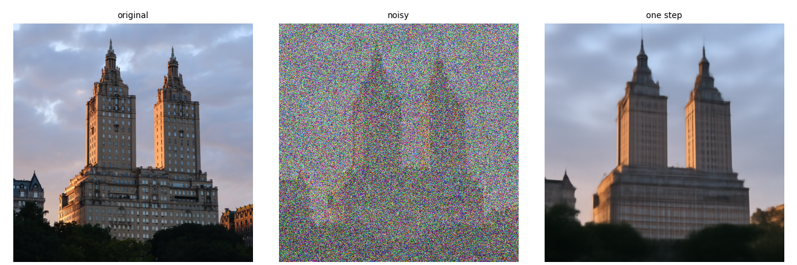
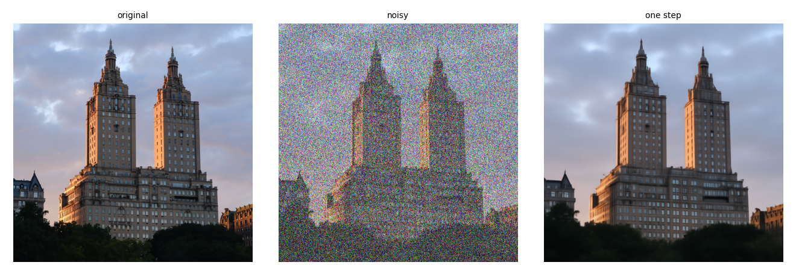
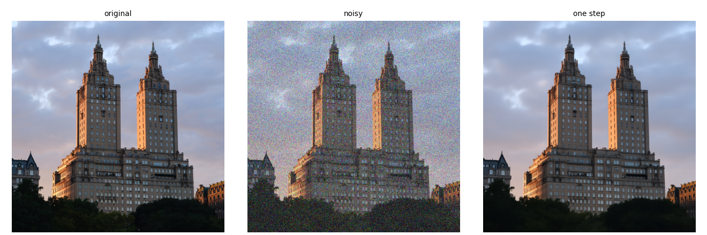
At t = 0.75 the estimate is close to the original. At t = 0.25 the layout and colors are right but the detail is gone. With that much noise, lots of different images could match the input, so a single guess lands near their average. It's still much better than the blur.
Here I compared what the model adds in 1.3, the predicted update (1 − t)v̂, with the update that would recover my image exactly. Since I know the noise, the true velocity is vgt = x1 − ε, so the true update is x1 − xt. The error map is the RMS over RGB at each pixel:
Both updates share one color scale with gray as zero, and the error maps share one linear scale, so all three times can be compared directly.
@torch.inference_mode()
def velocity_diagnostics(x_t, t, clean_image, epsilon, condition, predict_velocity):
predicted_update = (1 - t) * predict_velocity(x_t, t, condition)
ground_truth_update = clean_image - x_t # = (1 - t)(x1 - eps)
error_map = ((predicted_update - ground_truth_update) ** 2).mean(dim=1).sqrt() # RMS over RGB
return predicted_update, ground_truth_update, error_map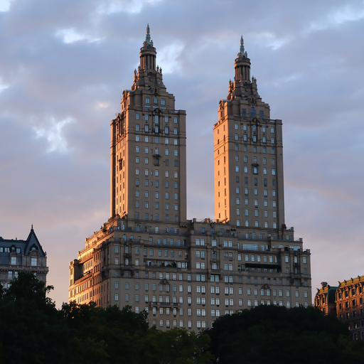
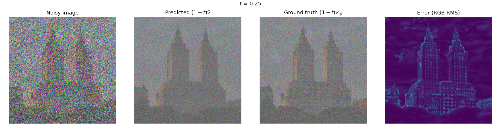
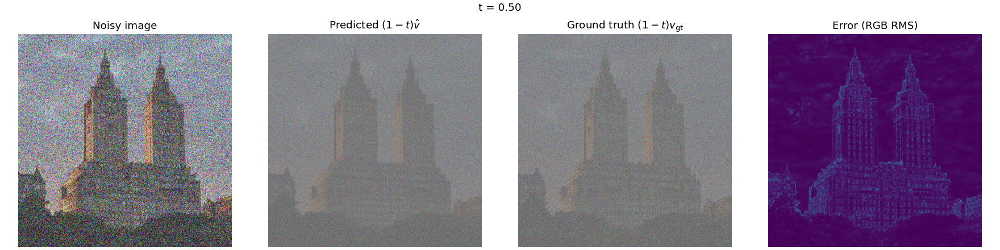
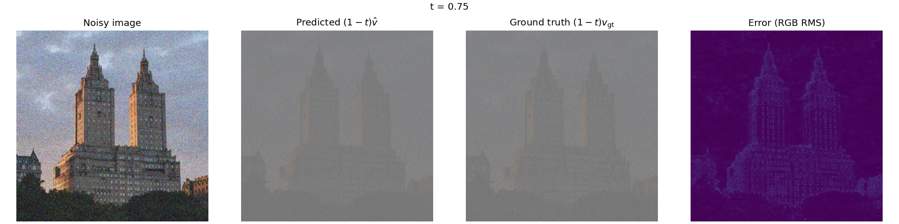
The ground-truth update is mostly the negative of the noise, so it looks like static with a faint image in it. The predicted update gets the static right but is smoother where the image is. The error is biggest at t = 0.25 and sits on the edges and fine texture, the details the model can't know from such a noisy input. As t goes up, the updates shrink and the error map gets darker.
Instead of one big jump, I take small steps and ask the model for a new velocity each time:
The last step is shortened if needed so the run ends at exactly t = 1. From the t = 0.50 input with h = 0.02 that's 25 updates. I checked the sampler with a constant velocity of 1, and it took 50 steps from t = 0, 25 from t = 0.5 and 4 from t = 0.93, ending at t = 1 every time.
@torch.inference_mode()
def euler_sample(x_start, t_start, step_size, velocity):
x = x_start.clone().float()
n_steps = math.ceil((1.0 - t_start) / step_size - 1e-9)
states = [(t_start, x.clone())]
for i in range(n_steps):
t = t_start + i * step_size
last = (i == n_steps - 1)
t_next = 1.0 if last else t_start + (i + 1) * step_size
x = x + (t_next - t) * velocity(x, t) # new model call every step
if (i + 1) % 5 == 0 or last:
states.append((t_next, x.clone()))
return x, states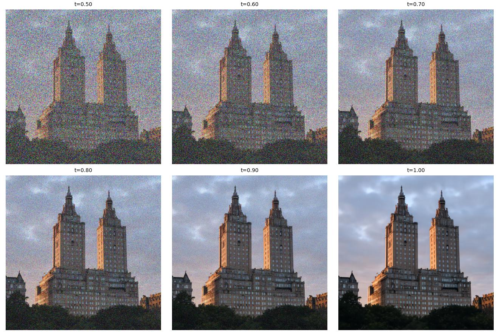
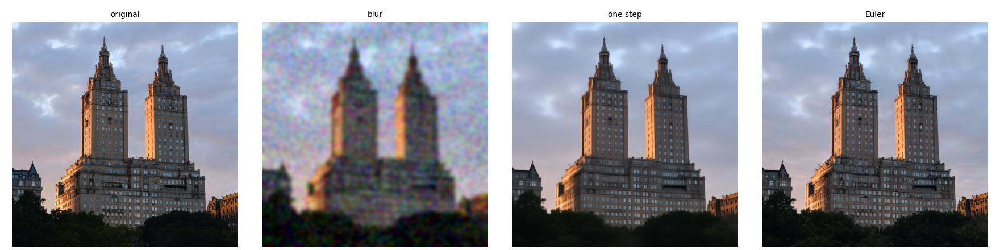
| Method (from t = 0.50) | Model calls | MSE to original |
|---|---|---|
| Gaussian blur | 0 | 0.0211 |
| One step | 1 | 0.0072 |
| Euler (h = 0.02) | 25 | 0.0087 |
The blur is clearly the worst, with about three times the error of the other two. Euler looks the sharpest and most realistic, but surprisingly one step has the lower MSE. The one-step result is a blurry average of every image that could match the input, and an average is a safe bet under squared error. Euler commits to specific detail, which looks better but doesn't exactly match my photo, so every made-up edge counts against it.
With tstart = 0 there's no image in the input at all, so 50 Euler steps with “a high quality photo” make an image from scratch. I generated five with seeds 180–184.
The generic prompt mostly gives portraits of people. Without guidance they tend to look messy, and some never settle on a clear subject.
To make the prompt count for more, I get two velocities at the same xt and t, one with the prompt (vc) and one with the empty prompt (vu). Their difference is what the prompt adds, and CFG pushes further in that direction:
With w = 0 this is just the conditional prediction, which I checked. Each step now costs two model calls instead of one.
def cfg_velocity(x, t, condition, w, predict_velocity, null_condition):
v_c = predict_velocity(x, t, condition) # with the prompt
if w == 0:
return v_c
v_u = predict_velocity(x, t, null_condition) # empty prompt, same x and t
return v_c + w * (v_c - v_u)
Since the starting noise is the same, each guided image lines up with its unguided version in 1.6. The guided ones have clearer subjects, sharper detail and much stronger contrast. The downside is that they look more alike, and the colors are often oversaturated and less natural.
This is SDEdit. I noise a real image to some tstart and run the Euler sampler with CFG from there to t = 1. The model has to fill in whatever the noise destroyed, so the result keeps only what survived the noise.
A small tstart is almost pure noise, so little of the input is left. A large one keeps most of it. I used tstart = 0.02, 0.04, 0.06, 0.10, 0.14, 0.25, 0.50 with “a high quality photo” and the same noise for every edit.
def edit(image, noise, t_start, condition, predict_velocity, w=7, step_size=0.02):
x_t = interpolate(image, noise, t_start) # partially noise the image
vel = lambda x, t: cfg_velocity(x, t, condition, w, predict_velocity, null_condition)
out, _ = euler_sample(x_t, t_start, step_size, vel)
return out
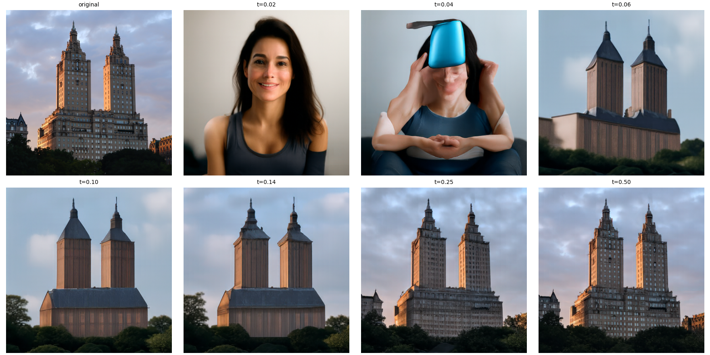
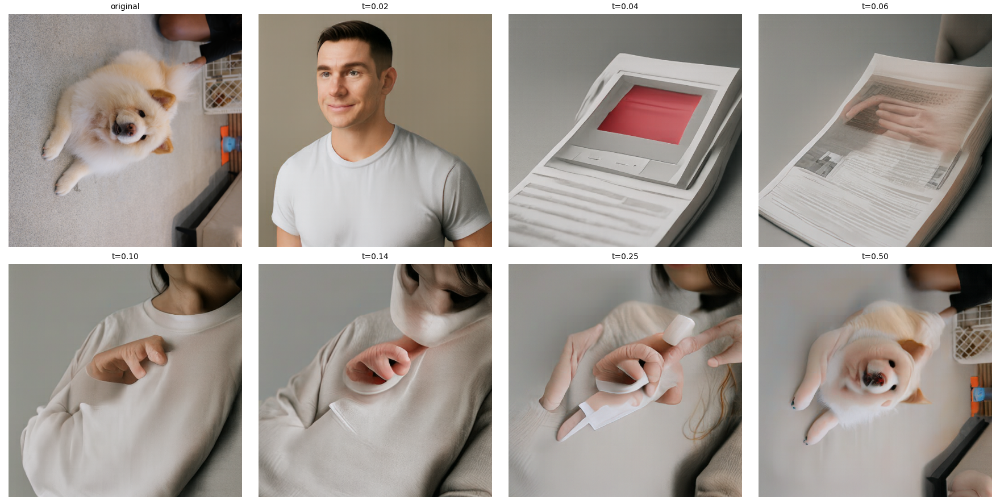
At 0.02–0.06 the results are unrelated images that only share the overall colors. Around 0.10–0.14 the layout of the original shows up, and at 0.25–0.50 the results are close to the original with small changes in texture.
The dog photo was the exception. It loaded sideways because my phone stores the orientation as metadata, which the preprocessing ignores. The dog only comes back at 0.50. From 0.10 to 0.25 the model kept the layout and colors but turned them into a person in a beige sweater, with the cream fur as the sweater and the dark object in the corner as hair. My guess is that a small, pale dog seen sideways from above looks nothing like the upright photos the model mostly learned from, so it falls back on a more common subject with the same colors.
I also tried images that aren't photos, using the same starting times and prompt.
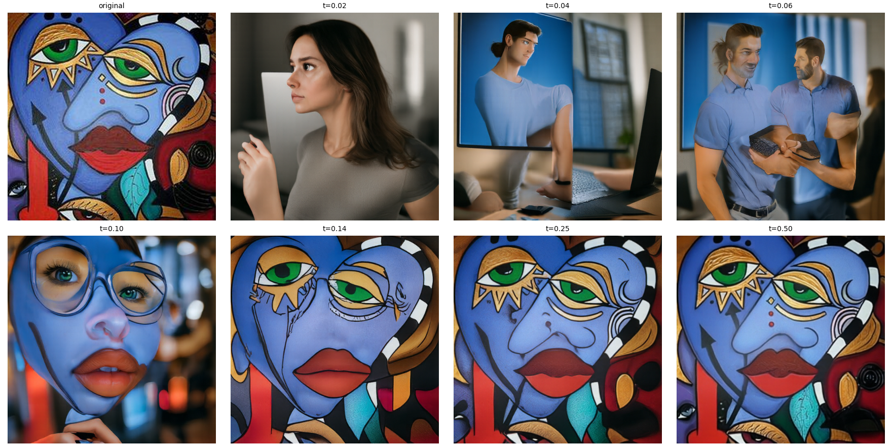
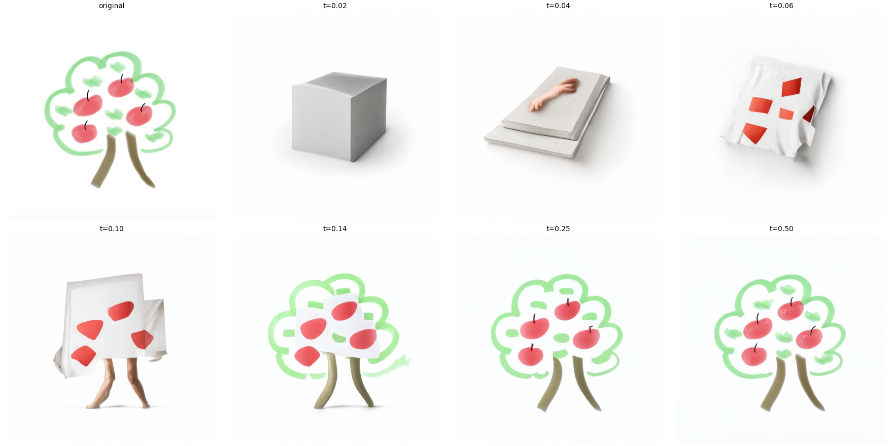
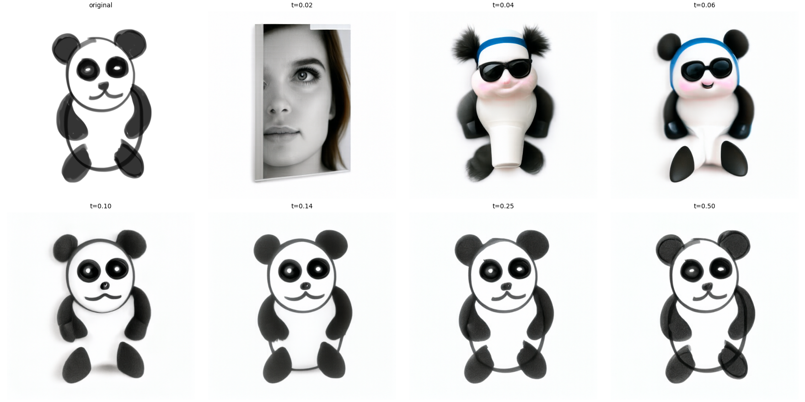
I expected the drawings to turn into realistic photos, but neither did. From 0.14 up they stay drawings with smoother lines. The interesting part is 0.04–0.10, where the model turns parts of the drawing into real objects. On the apple tree, the apples became red patches on a white cloth, and at 0.10 the two trunk lines became a pair of legs under it. On the panda, the black eye patches became sunglasses at 0.04–0.06 and the panda became a shiny 3D toy, and at 0.10 it's a shaded 3D version of my drawing. The model keeps the shape and color of each part but decides for itself what it is.
Same as 3.1, but with a prompt for what I want the image to become. The starting time decides how much of the original survives, and the prompt decides what fills in the rest.
| Image | Prompt |
|---|---|
| Campanile | “a photograph of a porcelain vase on a table” |
| Building | “a photograph of a chocolate bar” |
| Dog | “a photograph of a bowl of soup” |
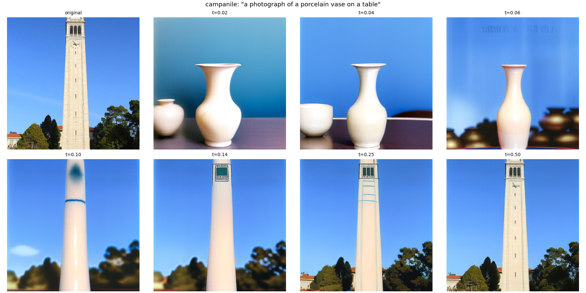
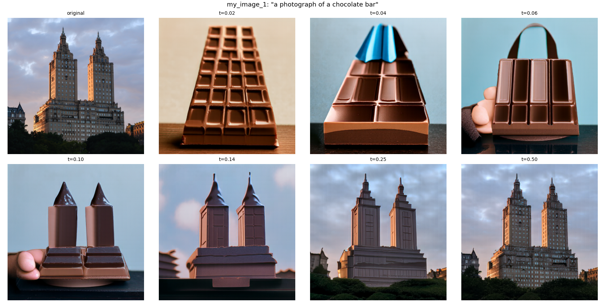
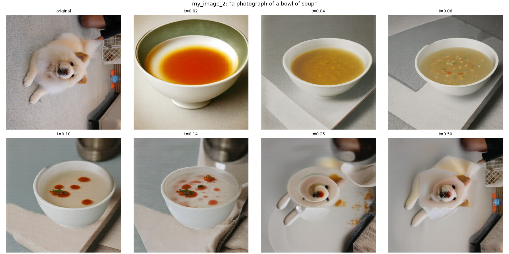
For all three, 0.02–0.06 only follows the prompt, and by 0.50 the prompt barely does anything. The best results are in between.
Campanile → vase: At 0.10 the tower turns into a tall white porcelain column with a blue painted band, still in the original sky and trees. At 0.14 the real tower is back but looks glazed.
Building → chocolate bar: At 0.10 the two towers become two pointed pieces of chocolate on a chocolate base, which was my favorite result. At 0.14 the whole building is back but looks made of chocolate. At 0.06 the model made a chocolate handbag, which shows how loosely it follows the layout early on.
Dog → soup: There's a bowl of soup from 0.02 to 0.14, with the gray floor as a tablecloth and the dark object in the corner as a pot. 0.25 is the best mix, where the dog's face becomes a garnish on a small saucer. Like in 3.1, the sideways dog was the hardest to edit while keeping it recognizable.
A visual anagram looks like one thing upright and something else rotated 180°. At every Euler step I get one velocity for prompt a on the image as it is, and one for prompt b on the rotated image, which I rotate back. Averaging them moves the image toward both at once:
F flips both axes (a 180° rotation, not a mirror). Rotating the second velocity back puts both in the same frame before averaging.
def visual_anagrams(noise, condition_a, condition_b, predict_velocity, w=7, step_size=0.02):
def vel(x, t):
v1 = cfg_velocity(x, t, condition_a, w, predict_velocity, null_condition)
v2 = rotate180(cfg_velocity(rotate180(x), t, condition_b, w, predict_velocity, null_condition))
return (v1 + v2) / 2
out, _ = euler_sample(noise, 0.0, step_size, vel)
return out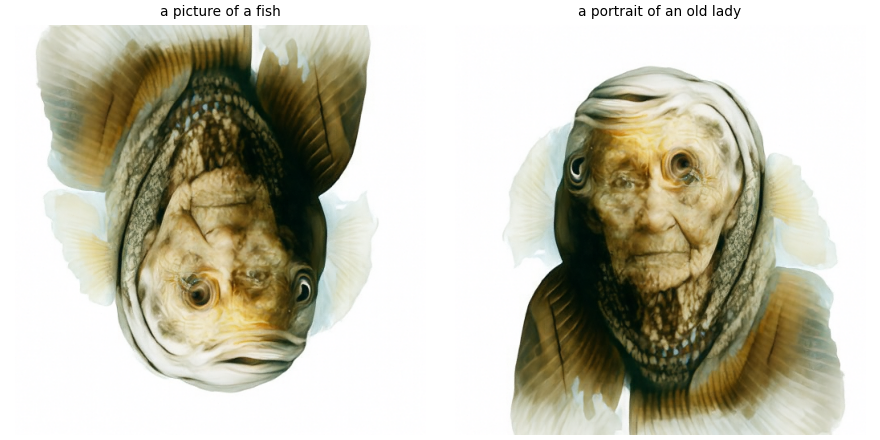
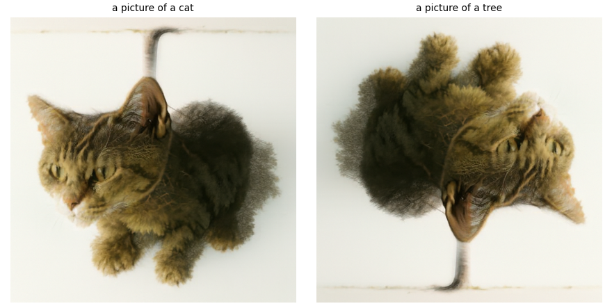
The fish and old lady worked well. Rotated, the old lady is very clear, with the fish's scaly body as her headscarf and the fins as its edges. Upright, the fish is weaker and looks a bit like an upside-down face, because her features are so strong. For the cat and tree, the cat is clear upright. Rotated, its fluffy body becomes the leaves and the tail becomes the trunk, so the tree reads at a glance, though you can still see the cat's face in the leaves. In both, one prompt wins over the other.
This is the hybrid image idea from Project 2, but done on the velocity instead of the finished images. At every step I take the low frequencies of prompt a's velocity and the high frequencies of prompt b's:
flow is a Gaussian blur with σ = 16 and kernel size 265. Up close the detail from prompt b should dominate, and from far away only prompt a's coarse shapes should be left.
def make_hybrids(noise, condition_a, condition_b, predict_velocity, w=7, step_size=0.02):
def vel(x, t):
v_a = cfg_velocity(x, t, condition_a, w, predict_velocity, null_condition) # far
v_b = cfg_velocity(x, t, condition_b, w, predict_velocity, null_condition) # close
return lowpass(v_a) + (v_b - lowpass(v_b))
out, _ = euler_sample(noise, 0.0, step_size, vel)
return out
Full size (close): “a lithograph of a waterfall”
64×64 (distant):
“a lithograph of a skull”
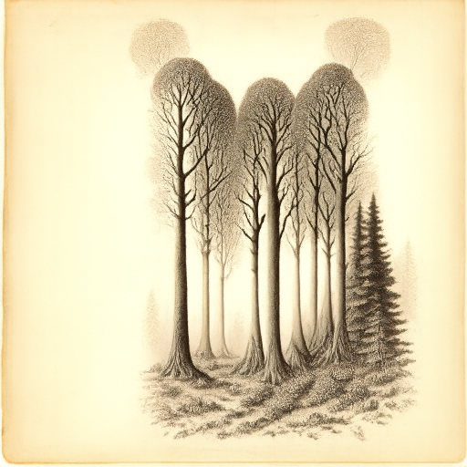
Full size (close): “a lithograph of a forest”
64×64 (distant):
“a lithograph of a cat”
Up close, both clearly show the close prompt. The distant prompt is much weaker. Shrunk down, the skull hybrid has a rounded, skull-like outline but none of the details, and in the cat hybrid the two pale tree tops sit where ears would be, but I honestly can't see a cat. The low-pass part only controls coarse shapes, and the close prompt's detail is strong enough that the model draws mostly that subject. Both prompts share the same sepia lithograph style, which at least keeps the two from looking pasted together.
The biggest takeaway was that the lowest error didn't mean the best image. Euler gave a much sharper, more realistic result than one step, but one step had the lower MSE, because a blurry average is safe under squared error while real but slightly wrong detail gets punished. The editing sections also changed how I think about what the model keeps from an input. It holds on to the layout and colors and then decides for itself what they are, so the panda's eye patches became sunglasses, the apple tree's trunk became legs, and my sideways dog became a person in a sweater. That last one also taught me to check my inputs, since a photo loading sideways was enough to change the results (though it also made for some interesting ones).